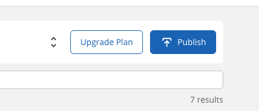
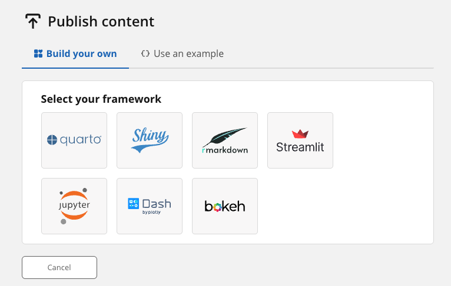
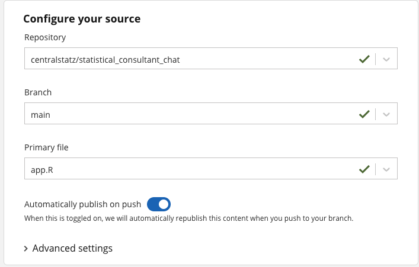
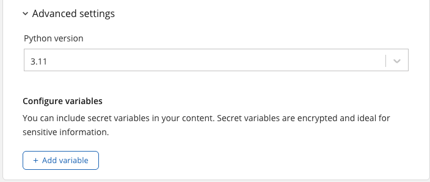
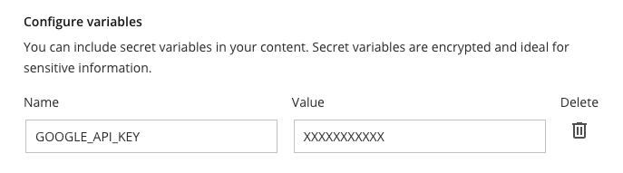
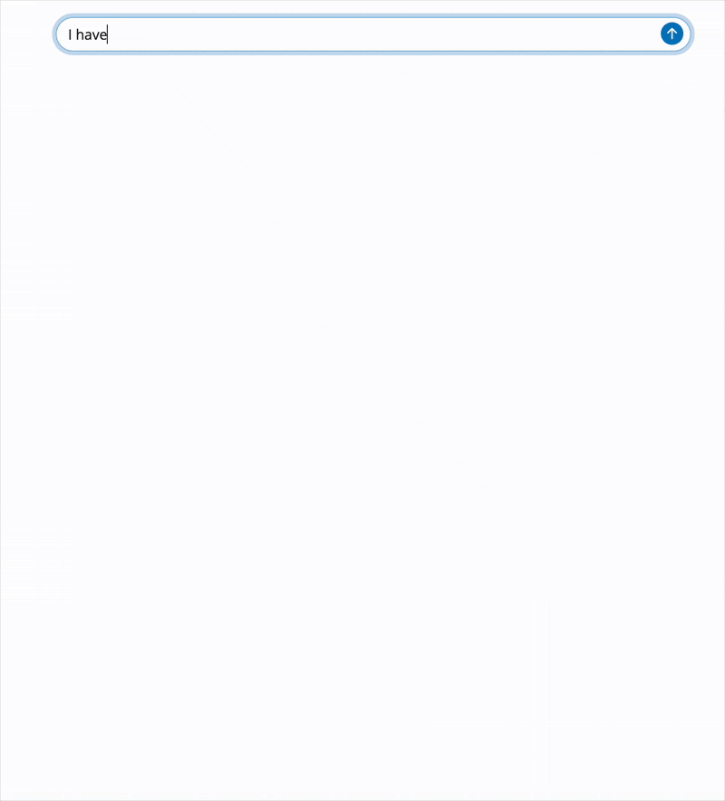

Code
install.packages("shiny")Alex Zajichek
May 13, 2025
The stuff Posit has been doing with AI has been really refreshing for data scientists, especially R and Python developers. With ChatGPT and the other popular chat GUIs out there, using AI tools was sort of fun, but now with the ability to programmatically interact with LLM’s as part of my data science tech stack, I’m actually excited about using them.
I attended ShinyConf 2025 and there were a lot of great talks that made these tools very appealing to work with. They introduced the ellmer package in R, and other ones such as shinychat and querychat. Having no experience using these yet, I wanted to see how simple it would be to build and deploy a chat application from scratch that acts as a statistical consultant, which is what is in the video above 👆 👆 👆
Here are the steps taken, in text form:
First, if you wanted to see how the app works and the full code behind it, you can find these here:
Now on to the tutorial 👇
Of course, we need to make sure shiny is installed.
Then the brunt of the work here is going to be done by:
ellmer: What we use to send prompts and receive responses from an LLMshinychat: How we create the chat user interface for our applicationBoth of these are on CRAN, so we can also install them easily.
You need to choose which LLM you want to facilitate the chat function in your application. ellmer supports all the major ones, and you can scan through the list here.
Many of these require some sort of payment for API usage, but Google Gemini offers free-tier usage, so that’s what I went with. So from that list above, I chose the chat_gemini option.
In order to get this working, you need to configure an API key to send prompts to the model programmatically.
You can go to the Google AI Studio (and login with your Google account and agree to terms), click Create API Key in the top-right corner, and copy the key to your clipboard (see this part of the video above for a visual).
As stated in the function documentation, rather than hard-coding your API key into your app code, you just put in your local R environment file (.Renviron) as GOOGLE_API_KEY. As always, this is made simple with the usethis package.
In RStudio, just type usethis::edit_r_environ() and your .Renviron file will open. Then on a new line, enter your API key:
GOOGLE_API_KEY=XXXXXXXXXXXXXXXXXXXXXXXX <-- FILL IN WITH YOUR KEYSave it, and that’s it.
You should immediately be able to send/receive a response from Gemini:
Using model = "gemini-2.0-flash".This is a classic riddle! The truth is, there aren't any perfect rhymes for
"orange" in the English language.
However, people sometimes use near rhymes or words that rhyme in specific
dialects. For example:
* **"Door hinge"** - If you combine two words, you can get a near rhyme.
* **"Lozenge"** - This is the closest near rhyme you'll find as it sounds
almost like "lore-inj"
**So, the best answer is: There isn't a perfect rhyme for "orange."**I store my code on GitHub, so I first went there to create a new public repository (you can see mine here).
Then in RStudio, you can create a new project (File -> New Project -> Version Control -> Git). Clone the repository you just made so that your local project is pre-configured to push changes to the remote repo (see here).
One of the most important concepts during ShinyConf 2025 was the system prompt. It is how you shape the broader LLM that you’ll be using (in my case, Gemini) to take on a given behavior or persona that you’d like for your application. You set this once upon application start up.
For my purposes, I wanted the chatbot to act like a statistical consultant. Not just any statistical consultant, but one that was very focused on practical application (not statistical significance), as if a business owner was interacting with it trying to use data to make a decision that they needed to take action on soon. This was my system prompt:
“You are a statistical consultant. You are interacting subject matter experts and/or business leaders who are trying to use statistics to take action and make decisions. The person you are talking to is interested in tangible, real-world results and outcomes, so you should problem solve with insofar as to help them achieve those goals. We are not necessarily concerned with things like statistical signifcance or just running tests, unless it is actually relevant to the action or decision point. Instead, focus on the practical steps this person may take, in the context of their problem, to move closer to their desired goal. To do this, you will ask questions about what they are trying to solve, and how we know that what we’ve done provides real value. Then once you’ve gained enough information, you can develop a pragmatic strategy for how they should get started, and what the roadmap may look like. You’re suggestions may include technical things where it makes sense (like tools, methodology, etc.), but should very much be focused on what a non-statistical person might be able to do to further this effort (e.g., better data collection, personnell, etc.)”
You can see the raw file here.
Since this was long text, I just put it in its own text file in my app’s directory. Then when app starts, load it into memory (see this line):
Then when the chat_gemini object is created, the imported prompt is entered there in the system_prompt argument (see this line:
We haven’t talked about the shinychat package yet, so we’ll do that here as we build the main application file, which you can find here.
The first part of the app just loads the packages we need (and imports the system prompt that we discussed above).
All we want here is the chat interface, nothing else, so it’s quite simple. First, we use the bslib package to create a page.
Then within there is where shinychat comes in, which very easily makes a chat user interface with the chat_ui function.
We place that in the page, and specify the id and placeholder for chat initialization, and the entire user interface just looks like this (see these lines):
First we create the chat object like we did above. Then we have to figure out how to continuously send/receive messages while the app is running. That’s where ellmer comes back into play.
When we create the chat_gemini object, it is an R6 object of type Chat, and we use the stream_async method to feed responses back from the LLM, but we allow it to provide response as it goes so we’re not just waiting for all of it to complete. In that method, we provide the input$chat_user_input which is just the message we type into the chat interface we created above (and is automatically accessible via the creation of the chat_ui).
Once we create that stream, then we go back to shinychat and use the chat_append function to feed our chat_ui the results. And that’s it.
The full server function looks like this (see it here):
And our app is complete. We should now be able to run it locally.
The live app is here.
I used Posit Connect Cloud, which is an awesome platform for deploying data science apps to the web. Basically all complex configuration is done there, we just need to supply the code. And you can do it for free.
The last thing you’ll want to do before deploying to Connect Cloud is to create a file called manifest.json and store it at the root of your app directory. You do this after you’ve made all changes to your app code, and it’s meant to capture your R environment and packages/dependencies so that it can be recreated upon deployment. Yet again, this is done with a simple line of code (assuming your working directory is your app’s location):
You should now see manifest.json.
We can then commit changes and push the code to GitHub in the repository that was created earlier. This was my commit for the app.
I created my account using GitHub credentials (see my profile), so when I want to deploy something, it already has access to relevant metadata.
First, hit the Publish button from your homepage:

Select Shiny:

Then configure the location of your code:

The repository name should auto-populate in the list if you signed up with GitHub. Then select the file that contains your app code (in my case, app.R). I chose to Automatically publish on push so that if I change my code and push to GitHub, the live app will automatically reflect updates.
Since we’re no longer local, we need to re-establish the connection to the LLM provider by setting the GOOGLE_API_KEY environment variable on Connect Cloud. Click Advanced settings:

Then Add variable, and enter your API key from above:

The hit Publish. Your app is now live. You can copy the public link to your app in the top-right of the page, and share it for the world to use!
My live app is here. This is a snippet of how it works:

---
title: "Making an AI statistical consultant"
description: "Exploring some new R packages for AI."
author: "Alex Zajichek"
date: "5/13/2025"
image: "feature.png"
categories:
- AI
- Shiny
- Web Applications
format:
html:
code-fold: true
code-tools: true
---
{{< video https://www.youtube.com/embed/WKB548RjE9o >}}
The stuff [Posit](https://posit.co/) has been [doing with AI](https://posit.co/use-cases/ai/) has been really refreshing for data scientists, especially R and Python developers. With [ChatGPT](https://chatgpt.com/) and the other popular chat [GUIs](https://en.wikipedia.org/wiki/Graphical_user_interface) out there, using AI tools was sort of fun, but now with the ability to programmatically interact with LLM's as part of my data science tech stack, I'm actually excited about using them.
I attended [ShinyConf 2025](https://www.shinyconf.com/) and there were a lot of great talks that made these tools very appealing to work with. They introduced the [ellmer](https://ellmer.tidyverse.org/) package in R, and other ones such as [shinychat](https://posit-dev.github.io/shinychat/) and [querychat](https://github.com/posit-dev/querychat). Having no experience using these yet, I wanted to see how simple it would be to build and deploy a chat application from scratch that acts as a statistical consultant, which is what is in the video above `r emo::ji("backhand index pointing up")` `r emo::ji("backhand index pointing up")` `r emo::ji("backhand index pointing up")`
Here are the steps taken, in text form:
# Live app + source code
First, if you wanted to see how the app works and the full code behind it, you can find these here:
* [Live app](https://01962be4-3359-d652-ac24-9641c956445a.share.connect.posit.cloud/)
* [Source code](https://github.com/centralstatz/statistical_consultant_chat/)
Now on to the tutorial `r emo::ji("backhand index pointing down")`
# 1. Install the libraries
Of course, we need to make sure [`shiny`](https://shiny.posit.co/r/getstarted/shiny-basics/lesson1/) is installed.
```{r, eval = FALSE}
install.packages("shiny")
```
Then the brunt of the work here is going to be done by:
* [`ellmer`](https://ellmer.tidyverse.org/): What we use to send prompts and receive responses from an LLM
* [`shinychat`](https://posit-dev.github.io/shinychat/): How we create the chat user interface for our application
Both of these are on [CRAN](https://cran.r-project.org/), so we can also install them easily.
```{r, eval = FALSE}
install.packages("ellmer")
install.packages("shinychat")
```
# 2. Choose an LLM provider
You need to choose which LLM you want to facilitate the chat function in your application. [`ellmer`](https://ellmer.tidyverse.org/) supports all the major ones, and you can scan through the list [here](https://ellmer.tidyverse.org/reference/index.html).
Many of these require some sort of payment for API usage, but [Google Gemini](https://gemini.google.com/app) offers free-tier usage, so that's what I went with. So from that list above, I chose the [`chat_gemini`](https://ellmer.tidyverse.org/reference/chat_gemini.html) option.
## Setting up the API
In order to get this working, you need to configure an API key to send prompts to the model programmatically.
### a. Retrieve the API key
You can go to the [Google AI Studio](https://aistudio.google.com/apikey) (and login with your Google account and agree to terms), click _Create API Key_ in the top-right corner, and copy the key to your clipboard (see [this part of the video above](https://youtu.be/WKB548RjE9o?t=199) for a visual).
### b. Set your local environment variable {#apikey}
As stated in the [function documentation](https://ellmer.tidyverse.org/reference/chat_gemini.html), rather than hard-coding your API key into your app code, you just put in your local R environment file (`.Renviron`) as `GOOGLE_API_KEY`. As always, this is made simple with the [`usethis`](https://usethis.r-lib.org/) package.
In [RStudio](https://posit.co/download/rstudio-desktop/), just type `usethis::edit_r_environ()` and your `.Renviron` file will open. Then on a new line, enter your API key:
```
GOOGLE_API_KEY=XXXXXXXXXXXXXXXXXXXXXXXX <-- FILL IN WITH YOUR KEY
```
Save it, and that's it.
You should immediately be able to send/receive a response from Gemini:
```{r}
# Load package
library(ellmer)
# Set up chat
chat <- chat_gemini()
# Send a prompt
chat$chat("What's a word that rhymes with orange?")
```
# 3. Initialize a new R project {#createproject}
I store my code on [GitHub](https://github.com/), so I first went there to create a new _public_ repository (you can see mine [here](https://github.com/centralstatz/statistical_consultant_chat/)).
Then in [RStudio](https://posit.co/download/rstudio-desktop/), you can create a new project (_File -> New Project -> Version Control -> Git_). Clone the repository you just made so that your local project is pre-configured to push changes to the remote repo (see [here](https://youtu.be/WKB548RjE9o?t=34)).
# 4. Develop the system prompt {#systemprompt}
One of the most important concepts during [ShinyConf 2025](https://www.shinyconf.com/) was the [_system prompt_](https://ellmer.tidyverse.org/articles/ellmer.html#what-is-a-prompt). It is how you shape the broader LLM that you'll be using (in my case, [Gemini](https://gemini.google.com/app)) to take on a given behavior or persona that you'd like for your application. You set this *once* upon application start up.
For my purposes, I wanted the chatbot to act like a statistical consultant. Not just any statistical consultant, but one that was very focused on _practical_ application (not statistical significance), as if a business owner was interacting with it trying to use data to make a decision that they needed to take action on soon. This was my system prompt:
> "You are a statistical consultant. You are interacting subject matter experts and/or business leaders who are trying to use statistics to take action and make decisions. The person you are talking to is interested in tangible, real-world results and outcomes, so you should problem solve with insofar as to help them achieve those goals. We are not necessarily concerned with things like statistical signifcance or just running tests, unless it is actually relevant to the action or decision point. Instead, focus on the practical steps this person may take, in the context of their problem, to move closer to their desired goal. To do this, you will ask questions about what they are trying to solve, and how we know that what we've done provides real value. Then once you've gained enough information, you can develop a pragmatic strategy for how they should get started, and what the roadmap may look like. You're suggestions may include technical things where it makes sense (like tools, methodology, etc.), but should very much be focused on what a non-statistical person might be able to do to further this effort (e.g., better data collection, personnell, etc.)"
You can see the raw file [here](https://github.com/centralstatz/statistical_consultant_chat/blob/main/system_prompt.txt).
## Placing it into the app {#systempromptinapp}
Since this was long text, I just put it in [its own text file](https://github.com/centralstatz/statistical_consultant_chat/blob/main/system_prompt.txt) in my [app's directory](https://github.com/centralstatz/statistical_consultant_chat/tree/main). Then when app starts, load it into memory (see [this line](https://github.com/centralstatz/statistical_consultant_chat/blob/03151165178f75d70520e952ab0efed9a89ed9c6/app.R#L8C1-L8C49)):
```{r, eval = FALSE}
system_prompt <- readLines("system_prompt.txt")
```
Then when the `chat_gemini` object is created, the imported prompt is entered there in the `system_prompt` argument (see [this line](https://github.com/centralstatz/statistical_consultant_chat/blob/03151165178f75d70520e952ab0efed9a89ed9c6/app.R#L22C3-L22C75):
```{r, eval = FALSE}
chat <- chat_gemini(system_prompt = paste(system_prompt, collapse = ""))
```
# 5. Put the app together
We haven't talked about the [`shinychat`](https://posit-dev.github.io/shinychat/) package yet, so we'll do that here as we build the main application file, which you can find [here](https://github.com/centralstatz/statistical_consultant_chat/blob/main/app.R).
## a. Load the required packages
The first part of the app just loads the packages we need (and imports the system prompt that we [discussed above](#systemprompt)).
```{r, eval = FALSE}
# Load packages
library(shiny)
library(bslib)
library(ellmer)
library(shinychat)
# Import system prompt
system_prompt <- readLines("system_prompt.txt")
```
## b. Make the user interface {#userinterface}
All we want here is the chat interface, nothing else, so it's quite simple. First, we use the [`bslib`](https://rstudio.github.io/bslib/index.html) package to [create a page](https://rstudio.github.io/bslib/reference/page.html).
Then within there is where [`shinychat`](https://posit-dev.github.io/shinychat/) comes in, which very easily makes a chat user interface with the [`chat_ui`](https://posit-dev.github.io/shinychat/reference/chat_ui.html) function.
We place that in the page, and specify the `id` and `placeholder` for chat initialization, and the entire user interface just looks like this (see [these lines](https://github.com/centralstatz/statistical_consultant_chat/blob/03151165178f75d70520e952ab0efed9a89ed9c6/app.R#L10)):
```{r, eval = FALSE}
ui <- page_fluid(
chat_ui(
id = "chat",
placeholder = "Hi, I'm a statistical consultant, how can I help you?"
)
)
```
## c. Define the server
First we create the chat object like [we did above](#systempromptinapp). Then we have to figure out how to continuously send/receive messages while the app is running. That's where [`ellmer`](https://ellmer.tidyverse.org/) comes back into play.
When we create the `chat_gemini` object, it is an [R6](https://r6.r-lib.org/articles/Introduction.html) object of type [_Chat_](https://ellmer.tidyverse.org/reference/Chat.html), and we use the [`stream_async`](https://ellmer.tidyverse.org/reference/Chat.html#method-stream-async-) method to feed responses back from the LLM, but we allow it to provide response as it goes so we're not just waiting for all of it to complete. In that method, we provide the `input$chat_user_input` which is just the message we type into the chat interface we [created above](#userinterface) (and is automatically accessible via the creation of the [`chat_ui`](https://posit-dev.github.io/shinychat/reference/chat_ui.html)).
```{r, eval = FALSE}
stream <- chat$stream_async(input$chat_user_input)
```
Once we create that stream, then we go back to [`shinychat`](https://posit-dev.github.io/shinychat/) and use the [`chat_append`](https://posit-dev.github.io/shinychat/reference/chat_append.html) function to feed our [`chat_ui`](https://posit-dev.github.io/shinychat/reference/chat_ui.html) the results. And that's it.
The full server function looks like this (see it [here](https://github.com/centralstatz/statistical_consultant_chat/blob/03151165178f75d70520e952ab0efed9a89ed9c6/app.R#L19)):
```{r, eval = FALSE}
server <- function(input, output, session) {
# Setup the chat
chat <- chat_gemini(system_prompt = paste(system_prompt, collapse = ""))
# Stream responses as they come
observeEvent(input$chat_user_input, {
stream <- chat$stream_async(input$chat_user_input)
chat_append("chat", stream)
})
}
```
And our app is complete. We should now be able to run it locally.
# 6. Deploy the app
The live app is [here](https://01962be4-3359-d652-ac24-9641c956445a.share.connect.posit.cloud/).
I used [Posit Connect Cloud](https://connect.posit.cloud/), which is an awesome platform for deploying data science apps to the web. Basically all complex configuration is done there, we just need to supply the code. And you can do it for [free](https://connect.posit.cloud/plans).
## a. Capturing your environment
The last thing you'll want to do before deploying to [Connect Cloud](https://connect.posit.cloud/) is to create a file called `manifest.json` and store it at the root of your app directory. You do this after you've made all changes to your app code, and it's meant to capture your R environment and packages/dependencies so that it can be recreated upon deployment. Yet again, this is done with a simple line of code (assuming your working directory is your app's location):
```{r, eval = FALSE}
rsconnect::writeManifest()
```
You should now see `manifest.json`.
## b. Push to GitHub
We can then commit changes and push the code to GitHub in the repository that was [created earlier](#createproject). [This](https://github.com/centralstatz/statistical_consultant_chat/commit/d22d2bf925040525624113e762cba373da131a99) was my commit for the app.
## c. Setup on Connect Cloud
I created my account using GitHub credentials (see [my profile](https://connect.posit.cloud/zajichek)), so when I want to deploy something, it already has access to relevant metadata.
First, hit the _Publish_ button from your homepage:

Select _Shiny_:

Then configure the location of your code:

The repository name should auto-populate in the list if you signed up with GitHub. Then select the file that contains your app code (in my case, `app.R`). I chose to _Automatically publish on push_ so that if I change my code and push to GitHub, the live app will automatically reflect updates.
### (Re) configure your API key
Since we're no longer local, we need to re-establish the connection to the LLM provider by setting the `GOOGLE_API_KEY` environment variable on Connect Cloud. Click _Advanced settings_:

Then _Add variable_, and enter your API key [from above](#apikey):

The hit _Publish_. Your app is now live. You can copy the public link to your app in the top-right of the page, and share it for the world to use!
<br>
My live app is [here](https://01962be4-3359-d652-ac24-9641c956445a.share.connect.posit.cloud/). This is a snippet of how it works: